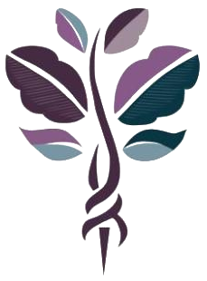
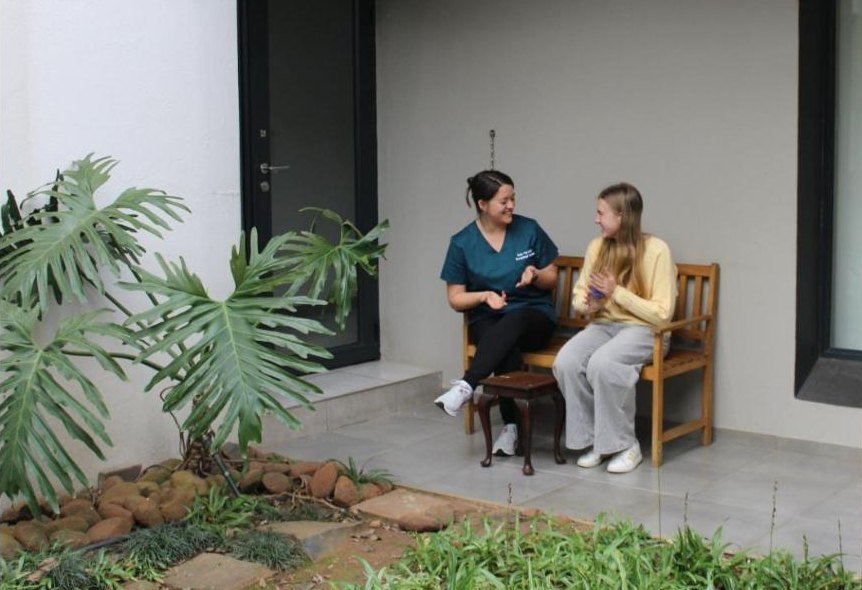
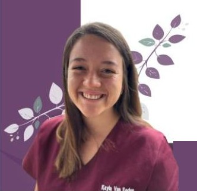
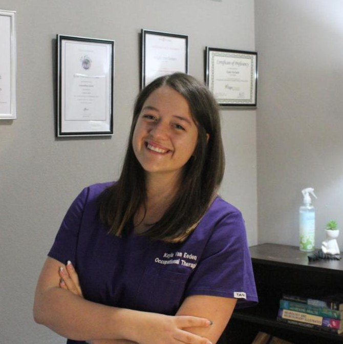

ASCEND
What is Occupational Therapy?
Occupational Therapy (OT) helps people of all ages participate in the daily activities (“occupations”) that are meaningful and necessary in their lives.
OT supports independence, functional ability, and quality of life by addressing physical, cognitive, emotional, and environmental barriers.

The Ascend journey.
Ascend symbolises the upward journey toward reclaiming your capability, restoring your identity, and stepping confidently into a life of purpose.
Our approach is built on three core pillars of care:Collaborative
Therapy is a partnership. We plan together, adjust as your life changes, and involve family, carers or your wider care team where it helps.
Evidence-Based
Our strategies draw on current occupational therapy research and clinical reasoning, then are adapted to your situation instead of applied as a template.
Client-Centered
Your goals, values and daily roles set the direction. We start with what matters to you and build every session around it.


Kayla Van Eeden
Kayla Van Eeden is the founder and Occupational Therapist at Ascend OT. Her practice is built on the core belief that every individual deserves to feel capable, confident, and fulfilled in their daily life.
Read Kayla’s Full BioGuided support on your journey to balance
Our occupational therapy services are designed around the meaningful occupations of your life. We help you address physical, cognitive, and emotional barriers to restore purpose and daily independence.
Not sure which pathway is right for you?
Let’s discuss your current circumstances, goals, and needs. Together, we will craft a personalised treatment roadmap.
Your Journey with Ascend
We guide you step-by-step away from chronic disruption toward active functional restoration. Here is how we build your structured path forward.
Assessment
A collaborative session dedicated to understanding your unique goals, baseline strengths, and functional daily challenges.
Plan/Feedback
Development of a highly personalized, clinical and action-oriented roadmap containing clear functional milestones.
Treatment
Practical hands-on sessions focusing on somatic strategies, cognitive tools, and meaningful real-life skill application.
Review
Consistent check-ins and evidence-based progress monitoring, adapting parameters to fit your developing routine.
Ready to reclaim your daily rhythm?
Let’s design a functional routine built around your life’s goals.
Flexible support, wherever you need it
Choose the format that fits your lifestyle, every session is tailored to your needs and goals.
Kayla Van Eeden
- HPCSA NUMBER
- OT 0115002
- PRACTICE NO
- 1149474
Sustained confidence starts with small, functional adjustments.
Kayla Van Eeden is the founder and Occupational Therapist at Ascend OT. Her practice is built on the core belief that every individual deserves to feel capable, confident, and fulfilled in their daily life.
She holds a Bachelor’s degree in Occupational Therapy from the University of the Free State, along with specialized post-graduate training, including an OTGrow Counselling course, Karen Theunissen’s Psychiatric Functional Capacity Evaluator Course, and certification as an ErgoScience practitioner.
Contributing to the Profession
OTASA Committee
Committee Member for Southern Gauteng OTASA, supporting the professional community and advancing OT standards.
Clinical Supervision
Clinical Supervisor at the University of Pretoria, guiding and evaluating final-year OT students on their clinical rotations.
Student Leadership
Served as OTASA Student Representative while studying at the University of the Free State.
Therapy Built Around You
Heard First
Your goals, values and lived experience set the direction of every session.
True Partnership
No one-size-fits-all plans. Together we break daily barriers into manageable steps that fit your life.
The Whole Person
We look beyond diagnosis to rebuild routines, restore function and reconnect with what gives life meaning.
Care That Fits
In the clinic, online or at home, whichever feels most comfortable for you.
A warm, safe space where you are met with empathy and dignity.
Rising from challenge to sustained confidence.
Whether navigating emotional dysregulation, recovering from burnout, rebuilding life after addiction, or adapting to changes in aging and physical health, Ascend OT provides a structured, compassionate path forward.
"Ascend was established to guide adults, adolescents, and older adults through life's most challenging transitions — one step at a time."— Kayla Van Eeden
Let’s talk about how I can help you
Reach out directly, or send a message and I’ll get back to you.
- 082 519 1509
- kaylave.ascendot@gmail.com
- 1 Ateljee St, Randpark Ridge,
Randburg, 2169